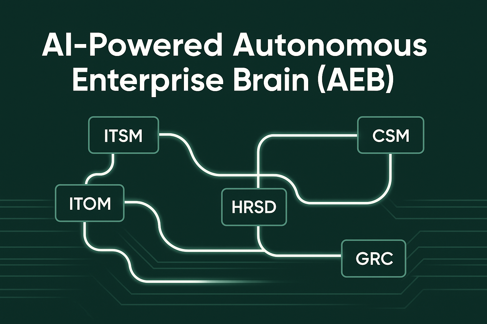

Autonomous Enterprise Brain (AEB)
Next-generation intelligent workflow orchestration engine powered by agentic AI.
View Full Details
Industry Positioning
AEB positions enterprises to move beyond traditional workflow automation into self-governing operational intelligence. Organizations adopt AEB to achieve real-time decisioning, autonomous routing, and self-healing processes across IT, HR, and Operations. This elevates operational maturity from reactive → predictive → autonomous.
Technical Architecture
AEB leverages a multi-agent decision layer, LLM-powered reasoning, and a contextual state engine synchronized with ServiceNow records. It integrates Workflow Engine, Predictive Intelligence, and AI Actions to form a closed-loop automation system capable of analyzing signals, deciding actions, and executing tasks autonomously.
Business Problem
Enterprises rely on manual triage, rigid workflows, and human-driven decision-making, slowing down operations and increasing bottlenecks. AEB eliminates these limitations by enabling AI-driven autonomous decisions, reducing MTTR, improving SLA adherence, and minimizing operational friction.
AI Hypothesis
If enterprise workflows are orchestrated through agentic AI with real-time context, then systems can adapt, learn, and optimize operations automatically, eliminating repetitive decision points and significantly improving efficiency.
Solution Prototype
The prototype processes events, applies LLM-based decision rules, evaluates confidence scoring, and executes next-best actions using ServiceNow automation. AEB continuously logs decisions, learns from outcomes, and updates action strategies autonomously, forming an evolving automation brain.